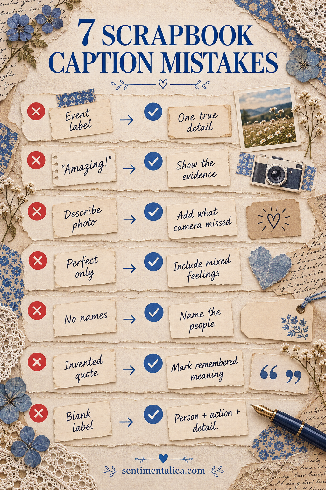

Scrapbook captions sound generic when they name the occasion but omit the detail only you could know. These seven mistakes are easy to correct, and none requires longer journaling or more decoration.

1. Naming the event instead of the memory
“Birthday dinner” identifies a category. “Dad ordered the lemon cake nobody expected to like” preserves an event. Keep the label if it helps, then add one detail that could not belong to a different photograph.
2. Writing only positive summary words
Words such as amazing, perfect, fun, and special do not show what happened. Replace one summary word with evidence: who laughed first, what went wrong, which object stayed on the table, or what someone said on the way home.
3. Describing what the photograph already proves
If the picture clearly shows three people beside a lake, the caption does not need to repeat that fact. Use the space for what the camera missed: the cold wind, the wrong turn, the borrowed jacket, or the reason you stopped there.
4. Removing every mixed feeling
A memory can be loving and tiring, funny and uncomfortable, beautiful and disappointing. Erasing that complexity often makes the caption sound like advertising. One honest clause can restore it: “We were exhausted, but nobody wanted to leave.”
Want a neutral picture for caption practice? Use one free floral image and write three different captions for it: observation, memory, and feeling.
5. Leaving out names because they feel obvious
Names that are obvious today may not be obvious to someone opening the album later. Add first names and relationships when space allows. For a group, write the names lightly on the photograph back rather than crowding the visible caption.
6. Forcing a quotation you cannot verify
Quotation marks imply exact words. If you remember only the meaning, write “She kept saying…” or “The joke was about…” instead of inventing a polished line. Approximate memory is valuable when it is labeled honestly.
7. Waiting for the perfect sentence
A dated fragment is better than an empty label. Use this reliable formula: person + action + precise detail. “Maya carried the pie box home because the lid would not stay closed” is plain, specific, and easy to understand years later.
Edit for recognition, not elegance
Read the caption aloud without looking at the photograph. If it could sit beneath twenty unrelated pictures, replace one phrase with a sensory or relational detail. Stop when the sentence brings back the actual scene. It does not need to sound literary; it needs to sound true to the people who were there.
For a final check, circle the most specific noun and verb. If you cannot find either one, revise the weakest phrase. Then add the date, location, and names somewhere on the page or photograph back. These factual anchors may feel plain now, but they are often what a future reader will need most.